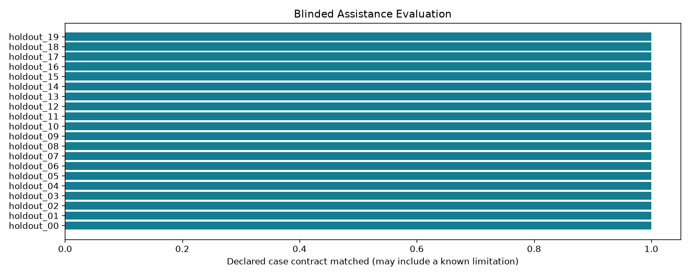

Offline, bounded research controls. A passing check may document a failure or an abstention.
| control_id | family | truth | prediction | decision | confidence | correct | checks_pass |
|---|---|---|---|---|---|---|---|
| holdout_00 | paired_cylindrical_cuts | hole | hole | hole | 1.0 | True | True |
| holdout_01 | paired_cylindrical_cuts | hole | hole | hole | 1.0 | True | True |
| holdout_02 | paired_rectangular_cuts | 1.0 | True | True | |||
| holdout_03 | paired_rectangular_cuts | 1.0 | True | True | |||
| holdout_04 | long_capsule_cut | slot | slot | slot | 1.0 | True | True |
| holdout_05 | long_capsule_cut | slot | slot | slot | 1.0 | True | True |
| holdout_06 | two_level_stair_cut | step | step | abstain | 0.69473117 | True | True |
| holdout_07 | two_level_stair_cut | step | step | step | 0.98597948 | True | True |
| holdout_08 | multiple_edge_chamfer | chamfer | chamfer | chamfer | 0.99966788 | True | True |
| holdout_09 | multiple_edge_chamfer | chamfer | chamfer | chamfer | 0.99966851 | True | True |
| holdout_10 | all_edge_rounding | fillet | slot | abstain | 1.0 | False | True |
| holdout_11 | all_edge_rounding | fillet | slot | abstain | 1.0 | False | True |
| holdout_12 | paired_cylindrical_additions | boss | boss | boss | 1.0 | True | True |
| holdout_13 | paired_cylindrical_additions | boss | boss | boss | 1.0 | True | True |
| holdout_14 | crossed_rectangular_additions | rib | rib | rib | 0.99999334 | True | True |
| holdout_15 | crossed_rectangular_additions | rib | rib | rib | 0.99998838 | True | True |
| holdout_16 | mixed_hole_boss | unknown | boss | boss | 1.0 | False | True |
| holdout_17 | mixed_hole_boss | unknown | boss | boss | 0.99999971 | False | True |
| holdout_18 | sphere_negative | unknown | hole | abstain | 1.0 | False | True |
| holdout_19 | sphere_negative | unknown | hole | abstain | 1.0 | False | True |
Detailed evidence · CSV · Contract
